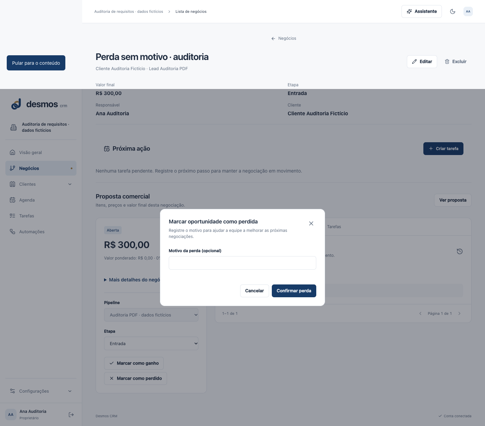
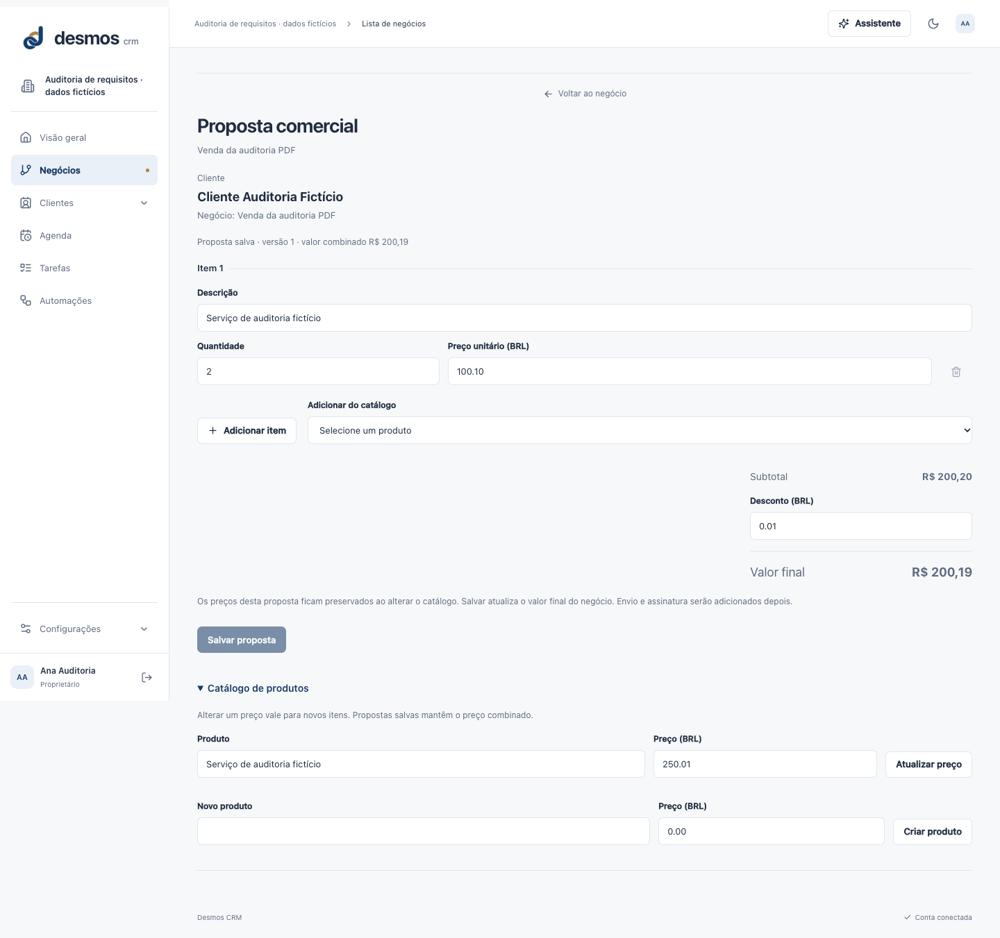
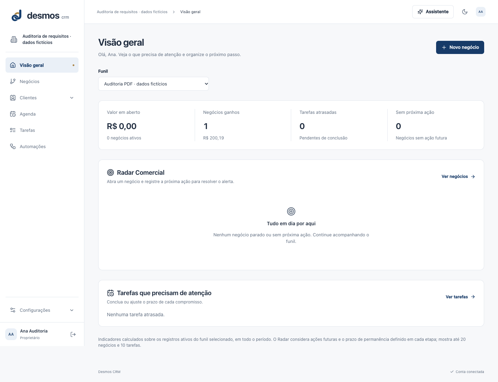
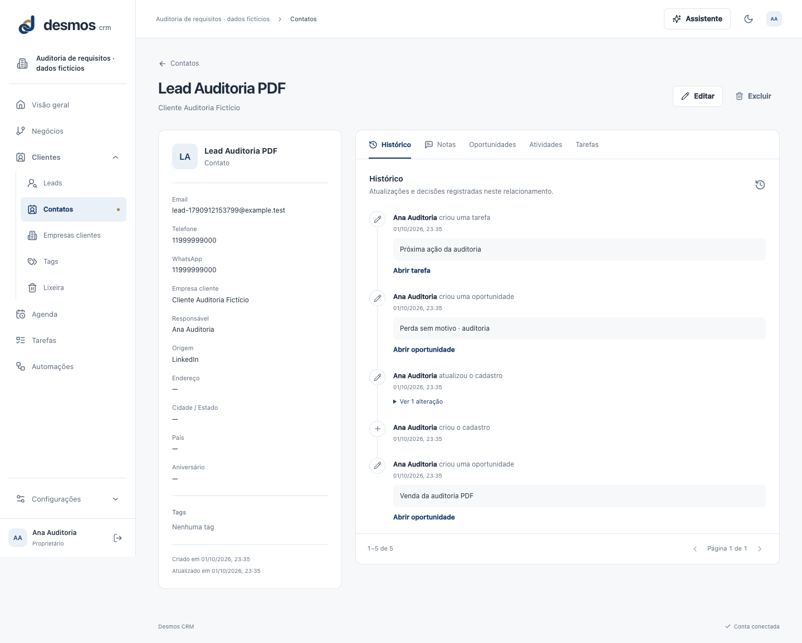

Auditoria dos requisitos · 02/10/2026
Dados fictícios em empresa nova, sem reset da apresentação, código alterado ou efeitos externos.15 E2E e61 API aprovados não significam atendimento integral dos14 requisitos do PDF.
Matriz e conclusões · Observações atuais · Smoke checks · Log API
Perda aceita sem motivo obrigatório
Captura funcional desktop de página completa; elementos fixos podem se repetir na composição. Não é nova aprovação de acabamento visual.
Catálogo básico e proposta persistida com snapshot
Captura funcional desktop de página completa; elementos fixos podem se repetir na composição. Não é nova aprovação de acabamento visual.
Painel real com métricas e filtros limitados
Captura funcional desktop de página completa; elementos fixos podem se repetir na composição. Não é nova aprovação de acabamento visual.
Contato: mailto disponível; WhatsApp apenas texto
Captura funcional desktop de página completa; elementos fixos podem se repetir na composição. Não é nova aprovação de acabamento visual.